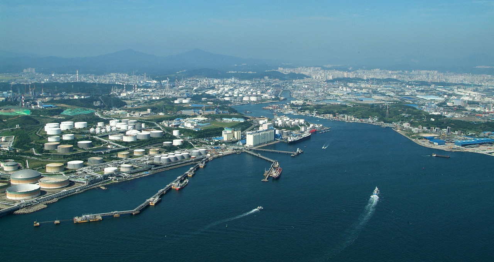

목표
 <<<<<<< HEAD최근 항만·물류 운영이 스마트화되고 있다.
이미 해외에서는 항만과 선박을 연결하거나 지능형·디지털 해상 내비게이션과 같은
해상통신 서비스가 구축되고 있고, 자율 운항 선박 개발에 박차를 가해 상용화되기까지 얼마 남지 않았다.
우리나라의 울산항만공사 역시 세계의 흐름에 맞추어 해상통신 연구, 화물 운송 정보공유 사업을 시범,
선박의 자동화·지능화 시스템에 대한 내용을 검토하는 등 스마트화 되고 있는 현재의 항만·물류 추세에 맞게 변화를 준비하고 있다.
특히 최근 스마트 항만물류 지원센터를 개장하여 물류 지식과 ICT 지식을 겸비한 인재를 양성하고 있으며
항만물류 스마트화 연구·개발에 심혈을 기울이고 있다.
이에 따라 본 서비스는 항만 및 물류와 관련한 웹·IoT·무선 LAN 취약점 진단 서비스를 제공함으로써
울산항만공사, 나아가 조선·해양산업을 위협하는 사이버 공격들로부터 보다 안전한 환경을 조성하는 것을 목표로 하였다.
기대효과
울산항만공사는 본 서비스를 통해 간단한 절차만으로 울산항의 항만 및 물류 상 SW와 HW가 가지는 보안 취약점을 리포팅받을 수 있다.
이를 통해 최근 울산항만공사가 추진하고 있는 항만의 스마트화로 인해 발생할 사이버 보안 위협을 확인할 수 있게 되어 천문학적인 피해를 사전에 예방하여 고부가가치 항만으로 거듭날 수 있을 것이다.
특히 본 서비스의 IOT 진단 기능으로 항만 내 IoT 의 현재 보안상태파악하여 자원의 소실 및 손상을 예방하여 사이버 보안뿐만
아니라 물리적 보안까지 대비할 수 있다.
이에 따라 항만의 불필요한 자원의 낭비를 줄여 에코스마트항만이라는 비전을 향해 도약할 수 있을 것이다.
조선해양산업을 위협하는 사이버 공격들로부터 보다 안전한 환경을 만들 수 있는 스마트 항만 물류 상의 웹과 IoT 기기의 보안 취약점을 진단할 수 있는 보안 시스템을 개발해 안전한 '에코스마트 항만' 유지를 목표로 한다.
기대효과
1. 스마트 항만 물류의 여러 SW/HW가 가지는 보안 취약점에 대해 조사할 수 있다.
2. 점검 과정을 단순화하고 시각적으로 보안 위험을 확인할 수 있다.
3. 사이버 공격에 방어함으로서 천문학적이 손해가 될 수 있는 해양산업 사이버 피해를 사전에 대비할 수 있다.
>>>>>>> 29aae6ea688f78cac1deb1cb68cb335f673f7fbb